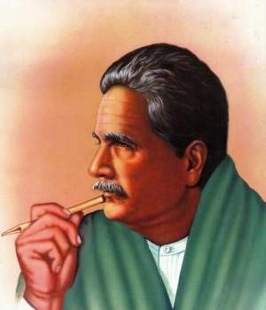

Muhammad Iqbal
(Urdu: محمد اقبال; 9 November 1877 – 21 April 1938) was a South Asian Muslim writer,[1][2] philosopher,
[3] scholar and politician,[4] whose poetry in the Urdu language is considered among the greatest of the twentieth century,
[5][6][7][8] and whose vision of a cultural and political ideal for the Muslims of British Raj[9] was to animate the impulse for Pakistan.
[1][10] He is commonly referred to by the honorific Allama[11] (from Persian: علامہ, romanized: ʿallāma, lit. 'very knowing,
most learned').[12]

infoarm
Born and raised in Sialkot, Punjab, Iqbal completed his B.A. and M.A. at the Government College Lahore.
He taught Arabic at the Oriental College, Lahore from 1899 until 1903. During this time, he wrote prolifically.
Among the Urdu poems from this time that remain popular are Parinde ki faryad (A bird's prayer),
an early meditation on animal rights, and Tarana-e-Hindi (The Song of Hindustan) a patriotic poem—both poems composed for children.
In 1905, he left for further studies in Europe, first to England, where he completed a second B.A. at Trinity College,
Cambridge and was subsequently called to the bar at Lincoln's Inn, and then to Germany,
where he received a Ph.D. in philosophy at the University of Munich.
information
After returning to Lahore in 1908, he established a law practice but concentrated on writing scholarly works on politics,
economics, history, philosophy, and religion. He is best known for his poetic works,
Asrar-e-Khudi – after whose publication he was awarded a knighthood,[13] Rumuz-e-Bekhudi, and the Bang-e-Dara. In Iran,
where he is known as Iqbāl-e Lāhorī (Iqbal of Lahore), he is highly regarded for his Persian works.
writer
Muhammad Farhan Abbasi